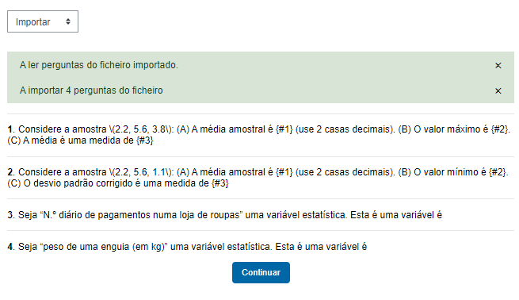
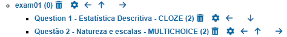
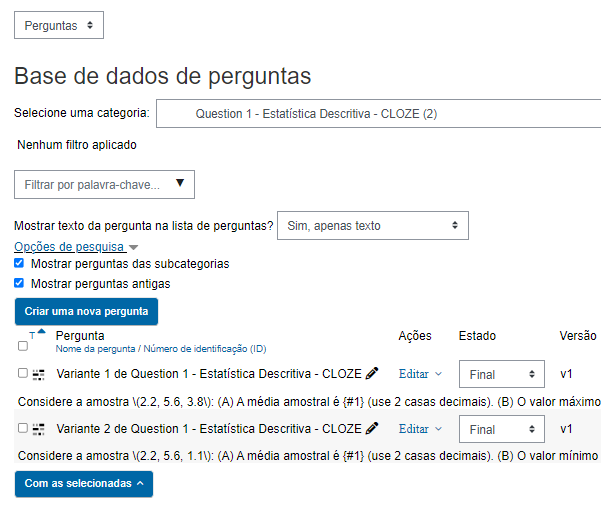
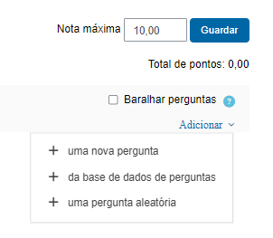

flowchart LR
T[Teacher] -->|creates| A
A[R Markdown\n'exam.Rmd'] -->|knitr| B[HTML file]
B -->|review| A
A -->|"export\n(...)"| M[Moodle]
M --> S[Student]
Teste Moodle
Ideia
Num único ficheiro R Markdown define-se um exame Moodle explicitando o que constitui cada “questão aleatória” (variantes).
Por “Teste Moodle” entende-se que há um ficheiro R Markdown (Rmd):
que contém todas as questões do teste de forma explícita.
implementa questões Moodle dos tipos: CLOZE, MULTICHOICE, ESSAY.
cada secção
#define uma “questão aleatória” que pode ser vista como:- um conjunto de questões com um prósito similar a serem sorteadas no momento do teste;
- uma categoria Moodle dentro da qual estão questões concretas.
dentro de cada secção
#, ocorre uma ou mais subsecções##que definem questões concretas:- dentro do Moodle corresponde a uma questão concreta;
- eventualmente, o auto pode editar essa questão já dentro do Moodle.
O fluxo de etapas é a seguinte:
Detalhes
---
title: "Teste Moodle em ficheiro único"
author: "Pedro Cruz"
date: "2024/setembro/10"
output: html_document
---
# Question 1 - Estatística Descritiva - CLOZE
## Variante 1
Considere a amostra \(2.2, 5.6, 3.8\):
**(a)** A média amostral é {:NUMERICAL:=3.866667:0.005} (use 2 casas decimais).
**(b)** O valor máximo é {:NUMERICAL:=5.6}.
**(c)** A média é uma medida de
{:MULTICHOICE:=localização central\~localização relativa\~dispersão}
### feedback
Consulte o Capítulo 1 - Estatística Descritiva.
## Variante 2
Considere a amostra \(2.2, 5.6, 1.1\):
**(a)** A média amostral é {:NUMERICAL:=2.966667:0.005} (use 2 casas decimais).
**(b)** O valor mínimo é {:NUMERICAL:=2.2}.
**(c)** O desvio padrão corrigido é uma medida de
{:MULTICHOICE:=dispersão\~localização central\~localização relativa}
### feedback
Consulte o Capítulo 1 - Estatística Descritiva.
# Questão 2 - Natureza e escalas - MULTICHOICE
## Variante 01
Seja "N.º diário de pagamentos numa loja de roupas" uma variável estatística.
Esta é uma variável é
### Respostas
* quantitativa, discreta, classificada em escala de razão.
* qualitativa, classificada em escala ordinal.
* quantitativa, contínua, classificada em escala de intervalos.
* quantitativa, discreta, classificada em escala nominal.
### Feedback
Consulte o Capítulo 1 - Estatística Descritiva.
## Variante 02
Seja "peso de uma enguia (em kg)" uma variável estatística.
Esta é uma variável é
### Respostas
* quantitativa, contínua, classificada em escala de razão.
* quantitativa, discreta, classificada em escala de intervalos.
* qualitativa, classificada em escala ordinal.
* quantitativa, discreta, classificada em escala nominal.
### Feedback
Consulte o Capítulo 1 - Estatística Descritiva.
Teste Moodle em ficheiro único
Pedro Cruz
2024-04-05
Question 1 - Estatística Descritiva - CLOZE
Variante 1
Considere a amostra (2.2, 5.6, 3.8):
(a) A média amostral é {:NUMERICAL:=3.866667:0.005} (use 2 casas decimais).
(b) O valor máximo é {:NUMERICAL:=5.6}.
(c) A média é uma medida de {:MULTICHOICE:=localização central~localização relativa~dispersão}
feedback
Consulte o Capítulo 1 - Estatística Descritiva.
Variante 2
Considere a amostra (2.2, 5.6, 1.1):
(a) A média amostral é {:NUMERICAL:=2.966667:0.005} (use 2 casas decimais).
(b) O valor mínimo é {:NUMERICAL:=2.2}.
(c) O desvio padrão corrigido é uma medida de {:MULTICHOICE:=dispersão~localização central~localização relativa}
feedback
Consulte o Capítulo 1 - Estatística Descritiva.
Questão 2 - Natureza e escalas - MULTICHOICE
Variante 01
Seja “N.º diário de pagamentos numa loja de roupas” uma variável estatística. Esta é uma variável é
Respostas
-
quantitativa, discreta, classificada em escala de razão.
- qualitativa, classificada em escala ordinal.
- quantitativa, contínua, classificada em escala de intervalos.
- quantitativa, discreta, classificada em escala nominal.
Feedback
Consulte o Capítulo 1 - Estatística Descritiva.
Variante 02
Seja “peso de uma enguia (em kg)” uma variável estatística. Esta é uma variável é
Respostas
- quantitativa, contínua, classificada em escala de razão.
-
quantitativa, discreta, classificada em escala de intervalos.
- qualitativa, classificada em escala ordinal.
- quantitativa, discreta, classificada em escala nominal.
Feedback
Consulte o Capítulo 1 - Estatística Descritiva.
Primeiro edita-se o ficheiro de nome exam01.Rmd, por exemplo, fazendo knitr até estar pronto.
Depois produz-se o ficheiro xml para ser importado para as “Categorias” Moodle do seguinte modo:
> library(rmdmoodle)
> xmlmoodle("exam01")O resultado é este:
> xmlmoodle("exam01")
------------------
Processing question: Question 1 - Estatística Descritiva - CLOZE
--------------------
Processing Variante 1
Processing Variante 2
------------------
Processing question: Questão 2 - Natureza e escalas - MULTICHOICE
--------------------
Processing Variante 01
Processing Variante 02
sendo produzido um ficheiro exam01.xml que pode ser importado para o Moodle:

flowchart TD
S[start] -->|docs and\nexamples| A
A[R Markdown\n'exam.Rmd'] -->|knitr| B[HTML file]
B -->|review\nfrequently| A
A -->|open| C
C[R console] -->|"> library(rmdmoodle)\n> xmlmoodle('exam')"| D[xml file\n'exam.xml']
D -->|import| E[Moodle]
E -->|"review,\n(rarely)"| A
E --> F[Real test moment]
F -->|improvements| A
Teste como categoria moodle
A imagem seguinte mostra o “exam01” como “Categoria Moodle” após importação do ficheiro “exam01.xml”:

Grupo de questões como subcategoria moodle
A subcategoria “Question 1 - Estatística Descritiva - CLOZE” tem duas questões que podem ser visualizadas:

Essas questões serão sorteadas pelos estudantes no momento de um teste.
Criação do teste no Moodle
Na criação do teste, opta-se por “+ uma pergunta aleatória” indicando, posteriormente, a subcategoria “Question 1 - Estatística Descritiva - CLOZE”
